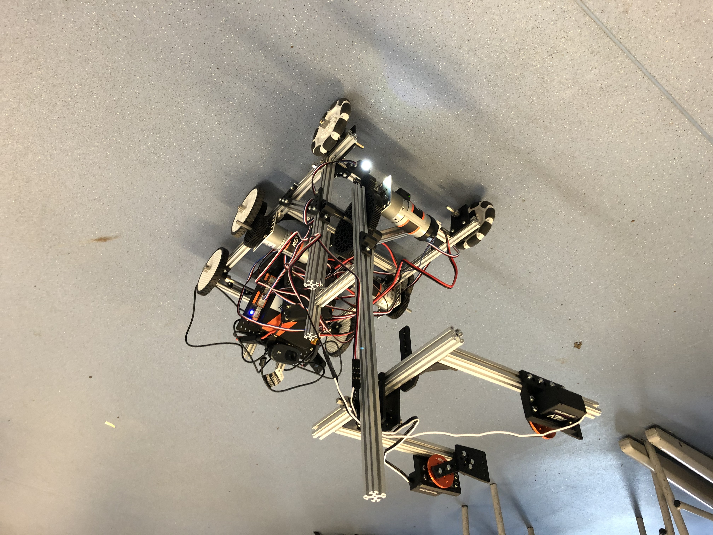

Ground X
The 2019-2020 Season
We started the season in september 2019. It took a while to get the team going as we had to learn from scratch. By November however we had a chasis which was built but wasn't moving In december however we had our first success with getting the robot moving and we went on a trip around our school.
Next up we wanted to get the claw working. This was very tricky and we went through multiple different design iterations before settling on a final one. We managed to get this working well by mid january and it was looking good :)
We also had to get automation to work. This was one of the most challenging but also most rewarding part of the robot as it is something we had never done before but it was amazing to see it working. Automation wasn't all of it though. We also had to actually drive the thing! Here you can see one of first attempts at maneuvering to pick up one of the blocks:
Next up was the competition!!!!
In the end we one the Inspire award which is we we're amazed by especially because we had no idea what how good our robot would be compared to everyone else's
It was an awesome day and the video below shows one of our matches (we're the red team)
As you can tell we got very excited :)
Unfortunately that was as far as our 2019-2020 season went as the season was cut short by covid-19 However we're now back up and running in the 2020-2021 Season which is going to be a virtual competion but we still get to build robots! Go to the Current Season tab to learn more :)